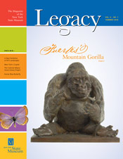
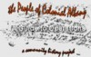

Listed below are the most recent additions and changes to the People of Colonial Albany Live Here website. Included is the date each web page was activated or substantially revised. Click on the highlighted text to take you to the new feature. Some/many of the new pages listed below items may appear to relate to lives of ordinary/average people and to things and issues of seemingly small significance. However, we consider each of them to be extremely important to the overall early Albany story and really do intend to illuminate/present every significant element in this format. Please remember that we consider every page to be "in-progress" and are revised on an ongoing basis!
Comments and suggestions are always welcome!


Linked transcription of the will of Philip Schuyler - 1804 (10/30/12)
Biographical sketch of Catherine Wetzel Ostrander (10/25/12)
Linked information page on the Saratoga Patent (10/20/12)
Notes on the life of Albany resident William Hunt (10/20/12)
Linked access page on the Albany Vrooman family (10/10/12)
Clustered notes on the life of Widow Mary Price (10/10/12)
Biographical sketch of Margarita Winne Van Ness (10/5/12)
Notes on the life of Magdalena Vrooman Van Ness (10/5/12)
Partially linked transcription of a newpaper item under the heading "The Fire of 1797" (10/5/12)
Linked transcription of a document under the heading "Officers [&] Artifacers" (1778) (9/30/12)
Biographical sketch of William Alexander (9/30/12)
Biographical sketch of Anna Van Woert Lansing (9/30/12)
Biographical sketch of Jacob Hinderer, Jr. (9/20/12)
Biographical sketch of Harmanus Hinderer (9/20/12)
Biographical sketch of Jacob Hinderer (elder) (9/20/12)
Biographical sketch of Susanna Van Schoonhoven Lansing (9/20/12)
Biographical sketch of Maria Bogardus Groesbeck (9/15/12)
Biographical sketch of Magdalena Bayeux Holland (9/10/12)
Biographical sketch of Frances Nicoll Holland (9/10/12)
Linked transcription of the will of Edward Holland - 1756 (9/10/12)
Linked transcription of the will of Philip Livingston - 1748 (9/10/12)
Biographical sketch of Alida Clute De Foreest (9/10/12)
Biographical sketch of Isaac Ja. Lansing (9/5/12)
Linked transcription of the will of Harmen Thomase Hun and his wife - 1663 (9/5/12)
Biographical sketch of Sara Livingston Alexander (8/25/12)
Biographical sketch of Elizabeth Cartwright Robisson (8/25/12)
Biographical sketch of Francis Nicoll (8/25/12)
Biographical sketch of Douw J. Fonda (8/25/12)
Biographical sketch of Engeltie Bradt De Foreest (8/20/12)
Biographical sketch of Richard Cartwright, Jr. (8/20/12)
Biographical sketch of Rutger Lansing (8/20/12)
Linked access page on the Bogardus family (8/15/12)
Pension application for service of Abraham D. Fonda (8/15/12)
Biographical sketch of Jannetje Bogert Groesbeck (8/10/12)
Biographical sketch of Wouter Groesbeck (8/10/12)
Albany-focused sketch for Governor George Clinton (8/10/12)
Biographical sketch of Hendrick G. Van Ness (8/10/12)
Biographical sketch of Wouter N. Groesbeck (8/10/12)
Biographical sketch of William Duer (8/10/12)
Biographical sketch of Maria Quackenbush Groesbeck (7/25/12)
Biographical sketch of Nicholas Groesbeck (7/20/12)
Biographical sketch of Maria Van Schoonhoven Fonda (7/20/12)
Biographical sketch of Abraham I. Fonda (7/20/12)
Biographical sketch of Susanna Wendell Van Schaick (7/15/12)
Biographical sketch of Hendrickie Lansing Fonda (7/15/12)
Biographical sketch of Abraham D. Fonda (7/15/12)
Biographical sketch of Johannes H. Roseboom (7/10/12)
Biographical sketch of Dirck Schuyler (7/10/12)
Biographical sketch of Robert Rumney (7/10/12)
Biographical sketch of Benjamin Whipple (7/10/12)
Linked access page on the Albany Van Woert family (7/10/12)
Biographical sketch of Philip Willis (7/10/12)
Biographical sketch of Anna Gansevoort Quackenbush (7/5/12)
Biographical sketch of James Robichaux (7/5/12)
Biographical sketch of Rebecca Kidney Elliot (6/25/12)
Linked transcription of the will of John C. Schuyler - 1793 (6/20/12)
Biographical sketch of Elizbeth Roseboom Gansevoort (6/20/12)
Biographical sketch of Johanna Van Corlear Rumney Groesbeck (6/20/12)
Partially linked excerpt from Abraham Lott's Journal - 1774 (6/20/12)
Biographical sketch of Barbara Gray Schuyler (6/15/12)
Notes on the life of Timothy Parks (6/15/12)
Biographical sketch of Wouter De Foreest (6/15/12)
Biographical sketch of Cornelis Groesbeck (6/15/12)
Linked transcription of the will of Barent Roseboom - 1795 (6/15/12)
Biographical sketch of James Elliot (6/10/12)
Baseline biographical sketch of William Tillman (6/10/12)
Biographical sketch of Gerardus De Peyster (6/10/12)
Biographical sketch of Conrad Gansevoort (6/5/12)
Baseline biographical sketch of Isaac Is. Fonda (6/5/12)
Biographical sketch of Cornelia De Foreest Fonda (6/5/12)
Biographical sketch of Jacobus Fonda (5/30/12)
Biographical sketch of Willempie Bogert Fonda (5/30/12)
Biographical sketch of Elizabeth De Meyer Schuyler (5/30/12)
Biographical sketch of John Randall, Jr. (5/20/12)
Biographical sketch of Egbertie Van Buren Abeel (5/15/12)
Biographical sketch of Jacobus Abeel (5/15/12)
Biographical sketch of Ned Davis (5/15/12)
Biographical sketch of Alexander Parks (5/10/12)
Biographical sketch of Edward Davis (5/10/12)
Outline biographical sketch of John Grant (the older) (5/10/12)
Biographical sketch of Anthony Wolf (5/10/12)
Biographical sketch of Isaac A. Fonda (5/10/12)
Biographical sketch of Isacher Child (5/5/12)
Biographical sketch of Elizabeth Simpson Pepper (5/5/12)
Biographical sketch of Catherine Willett Visscher (5/5/12)
Biographical sketch of Francis March (4/30/12)
Linked transcription of the joint will of Philip Schuyler and Margarita Van Slichtenhorst - 1683 (4/30/12)
Biographical notes on the life of Evert Evertse/Janse de Cuyper (4/30/12)
Biographical sketch of Elisha Putnam (4/20/12)
Biographical sketch of John Grant (4/20/12)
Linked transcription of the will of Margaret Schuyler - 1707 (4/15/12)
Biographical sketch of Jonathan Rumney (d. 1808) (4/15/12)
Biographical sketch of Jonathan Rumney (patriarch) (4/15/12)
Biographical sketch of Anthony B. Bradt (4/15/12)
Biographical sketch of Gregor Grant (4/10/12)
Biographical sketch of Peter Crannel (4/10/12)
Biographical sketch of Nicholas Crannel (4/10/12)
Linked access page on the Albany Crannel family (4/10/12)
Linked transcription of an "Order to Henry Hart" dated April 8, 1783 (4/10/12)
Biographical sketch of John Hammer (4/10/12)
Biographical sketch of William W. Crannel (3/30/12)
Biographical sketch of William De Witt (3/20/12)
Biographical sketch of Thomas Smith Webb (3/20/12)
Biographical sketch of Christopher Abeel (3/20/12)
Biographical sketch of "Captain" Thomas Webb (3/20/12)
Biographical sketch of Geertruy Dochter Witbeck (3/20/12)
Biographical sketch of Anna Rumney Van Benthuysen (3/20/12)
Biographical sketch of Stephen W. Johnson (3/20/12)
Biographical sketch of Stephen W. Johnson, Jr. (3/20/12)
Linked transcription of pension information on the life and service of Elisha Crane (3/20/12)
Biographical sketch of Samuel Stevenson (3/20/12)
Biographical sketch of Jacob Vosburgh (3/10/12)
Biographical sketch of Margarita Hansen Slingerland (3/10/12)
Biographical sketch of John B. Visscher (3/10/12)
Biographical sketch of Jan Thomase Witbeck (3/10/12)
Biographical sketch of Pieter Mingael (2/20/12)
Biographical sketch of Thomas Janse Mingael (2/20/12)
Biographical sketch of Margaret Stevenson Fowler (2/20/12)
Biographical sketch of Sara Monk Hooker (2/20/12)
Linked information page on the Albany Witbeck family (2/20/12)
Biographical sketch of John Meads (2/15/12)
Biographical sketch of Louisa Crane Meads (2/15/12)
Biographical sketch of William Fowler (2/15/12)
Biographical sketch of Daniel Ward (2/15/12)
Biographical sketch of Teunis Slingerland (b. 1757); (2/15/12)
Biographical sketch of Isaac Vosburgh (2/15/12)
Biographical sketch of Cynthia Steele Webster (2/15/12)
Biographical sketch of William Mahar (2/15/12)
Biographical sketch of Uriah Ward (2/15/12)
Biographical sketch of John Pye (2/10/12)
Biographical sketch of Thomas Shephard (2/10/12)
Notes on the life of John Sturgeon (2/10/12)
Biographical sketch of John H. Nemire (2/10/12)
Biographical sketch of Giles Spencer (2/10/12)
Biographical sketch of Reuben Schuyler (1/30/12)
Biographical sketch of Abraham D. Lansing (1/30/12)
Biographical sketch of Christina Voorhees Lansing (1/30/12)
Biographical sketch of Samuel Hooker (1/30/12)
Linked access page on the Albany Vosburgh family (1/30/12)
Biographical sketch of Alida Van Zandt Hooghkerk (1/20/12)
Biographical sketch of Philip Hooker (1/20/12)
Biographical sketch of James/Jacobus Hooghkerk (1/20/12)
Biographical sketch of Nicholas N. Quackenbush (1/20/12)
Biographical sketch of Thomas L. Witbeck (1/10/12)
Biographical sketch of James Blake (1/10/12)
Biographical sketch of Adam Blake (1/10/12)
Biographical sketch of Nicholas Roosevelt (1/10/12)
Biographical sketch of Maria Van Deusen Mingael Wendell (1/10/12)
Biographical sketch of Maria Vosburgh Van Alstyne (1/10/12)
bios indexed by SB2 thru 9/30/11
Home | Site Index | Navigation | Email | New York State Museum
Did you know that the items formally announced in the "New Features" sections include links to many more persons, places, and things that are not yet ready to be publicized? Those incomplete features have been posted online either "silently" or "privately."
Please keep in mind that every item you find on The People of Colonial Albany Live Here website is in-progress and is likely to be augmented, corrected, refined, and otherwise changed whenever necessary and as quickly as possible. In fact, many files are updated every day. The "last revised" date given at the bottom of most pages references some of the editing.